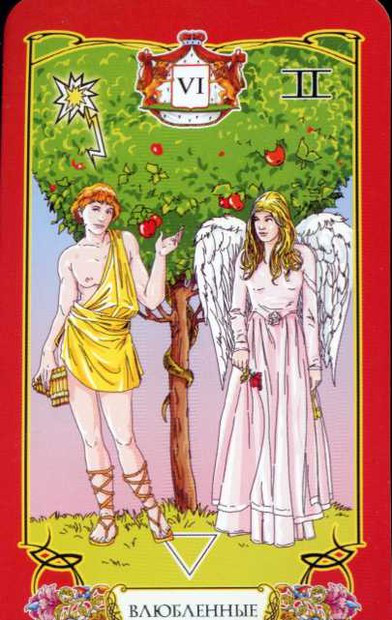
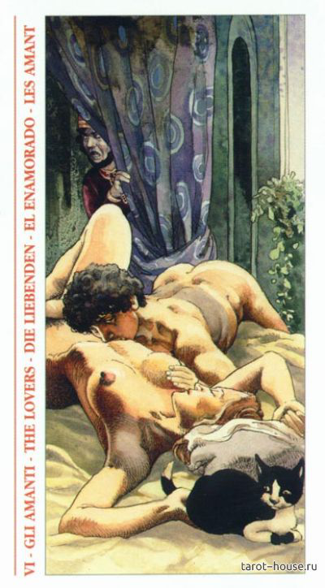
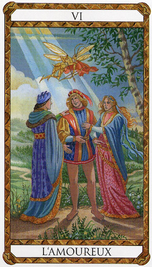

Влюбленные





3+2+1
Идзанами Идзанаки
Мне трудно пока полностью понять эту карту, наверное полное описание сделаю после того, как с тобой о ней пообщаемся.
Карта любви, чувств, союза, взаимной ответсвенности. По астрологической символике мне кажется Весы.
На некоторых картах женщин две, на мифическом таро даже три, а мужчина по сути делает выбор. Какая лучше )) На мифическом Таро там Афина, Афродита и Гера, спорят кто красивее, вроде так )) А какому-то бедняге выпала доля выборать одну из трех (не повезло парню, какое бы решение не принял, две оставшиеся женщины не простят). Вот тут Весы и включаются ))
Ну вот как-то так...
Адам и Ева
фокус внимание на разницу
8м, 10м(солнце) пересчения мага и влюбленых
детали на карте (таро Уэйта):
Мужчина и Женщина (одно дополняет другое), Солнце в зените - теплота, осознание, любовь
Позади людей райские деревья, на сколько я помню, кпеон-то из них называетя "Дерево познания Добра и Зла", что символизирует познание, способность решать что добро, что зло. И вкушение плода с этого дерева в итоге привело Адама и Еву к изгнанию из Рая и обретению Смерти.
цвет: красный, желтый (теплота, солнечность, активность), зеленый (жизнь)
фигура:
тетрис из двух одинаковых деталей (но разных по цвету), которые собирают одно целое.
символ:
два треугольника, один наверх, другой вниз
буква:
Y
ощущения
две полярности в одном. Но одному трудно быть без другого. Ситуация когда от чего-то надо отказаться в пользу другого, а также глубоко осознать свой выбор. Ситуация выбора, своего рода испытания. Выбор между прошлым и будущим, старым и новым, левым и правым.... Карта может даже описывать своего рода внутриличностный конфликт, когда одна часть тебя хочет одного, другая другого.
ключевые слова: выбор, два в одном, осознанность выбора, принятие решения
запах:
две ноты в одном
звук:
два созвучных голоса, но в разном диапозоне.
вкус:
яблоко кисло-сладкое, сначала кусаешь кислое, а потом жуешь оно сладким становиться. Лакрица тоже меняет свои вкусы во рту :))
астрология:
Близнецы
мифология:
Адам и Ева, Кастор и Полукс, Ромул и Рем, Идзанами и Идзанаки
Фразы: "Два в одном"
способности: расщеплять на полярности
окружение: средство 2 в 1, горячий чай со льдом
амулеты: крестик, любой символ веры.